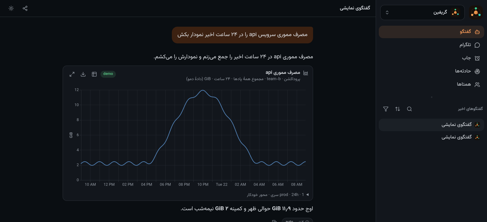

Your company’s AI workforce, not another chat window
Griffin runs on your own infrastructure, triages 3 AM incidents before revenue drops, coordinates across teammates’ agents without meetings or tickets, and gates every destructive change behind a 1-tap owner approval.
curl -fsSL https://griffin.paziresh24.com/install.sh | sudo bash
From business symptom to verified fix
State the goal in plain language. The orchestrator delegates in parallel to CDN, cluster, database, and Git specialists, verifies the live path, and delivers a result you can act on immediately.
5xx Spike on checkout gateway alongside a 5-minute drop in the live sales pulse.
service-profiles saturated a 2-connection DB pool. Fix MR is prepared. Approve merge?
End 3 AM dashboard hopping
Before paging anyone, Griffin verifies whether real users and transactions are impacted. When they are, it correlates CDN, cluster, database, and Git history in parallel and delivers a ready fix.
Agents talk to agents; humans stay in deep work
Instead of filing cross-team tickets or interrupting another engineer, your agent discovers which teammate owns a service via the authenticated skills map and resolves questions within read-only boundaries.

Metrics and commits translated into business signal
Queries Prometheus, Grafana, and SQL directly, compares live sales against normal-day baselines, filters out reverted deploys, and sends a crisp morning brief to leadership.
Built for measurable impact, not prompt engineering demos
Born inside a high-traffic healthcare platform serving millions of users, every part of Griffin solves a real operational bottleneck.
Mean Time to Root Cause
Correlates CDN edge health, Kubernetes events, container logs, database pools, and GitLab commits in one parallel pass before alerting the team.
Institutional knowledge that compounds
Every infrastructure trap, post-mortem, and business rule discovered in a session is committed to a local Git knowledge base and injected into future runs.
Zero vendor lock-in & quota continuity
Pools Claude, OpenAI Codex, Gemini, OpenRouter, and local Ollama seats with live 5h/7d quota tracking, instant failover, and per-user cost accounting.
Designed so CTOs and Security Teams can say yes
Safety in Griffin is enforced in isolated container boundaries and Broker code — never left to an LLM promising to behave.
The model never touches your raw credentials
The main App and Sandbox container holds zero passwords, SSH keys, or kubeconfigs. Credentials stay inside a separate Broker container (or your Infisical vault) reachable only over a local Unix socket with typed tool calls.
- Automatic secret scrubbing on every tool response before reaching the LLM
- SQL queries execute inside read-only transactions by default
- Destructive or mutating actions pause in code until the owner taps Approve
Web workspace, Telegram, Bale, and your real Chrome browser
No workflow migration required. Command your agents from Telegram while away from your desk, inspect live previews and Playwright screenshots directly inside the web workspace, or attach your Chrome browser for authenticated debugging.
- Agents are data, not code — create a new specialist profile in 30 seconds
- Native MCP server & client for Cursor, Claude Code, and custom tools
- Built-in Playwright browser + live preview cards for end-to-end verification

Where Griffin fits
| Operational Requirement | Chat UIs (OpenWebUI / ChatGPT) | Frameworks (LangChain / CrewAI) | Griffin |
|---|---|---|---|
| Real Infrastructure Execution | Manual copy-paste by humans | Custom Python glue & maintenance | 160+ tools + isolated Git worktrees ready |
| Credential & Blast-Radius Safety | None | Keys in same process as LLM | Isolated Broker + code-enforced owner gates |
| Cross-Team Collaboration | Isolated personal chats | Build from scratch | Authenticated Agent-to-Agent company mesh |
| Quota & Model Continuity | Stops at rate limit | Fails on HTTP 429 | Multi-account pool across Claude, Codex, Gemini |
| Live Code & UI Verification | Unverified text snippets | Custom scripts | Live sandbox previews + real Playwright browser |
Deep dives into how Griffin runs in production
How to Give AI Agents Production Access Without Leaking Credentials
The privilege-separated Broker pattern, read-only SQL defaults, secret scrubbing, and deterministic owner approvals.
Orchestrating Specialist Sub-Agents & Teammate Meshes over MCP
Non-blocking delegation, background subtasks, and peer quotas that eliminate cross-team bottlenecks.
Running Engineering & Executive Operations from Telegram
Pairing bots and owner accounts, editing messages in place, and approving changes with one tap.
Running Griffin with Local LLMs (Ollama / vLLM) & Multi-Engine Pools
Combine air-gapped local models with frontier cloud subscriptions and automatic quota failover.
Up and running in 60 seconds
All you need is a Linux host with Docker. The installer brings up the Griffin app and the isolated Broker container over a shared Unix socket.
curl -fsSL https://griffin.paziresh24.com/install.sh | sudo bashOpen the workspace
Visit port 3100, pick English or Persian, and set your owner password.
Connect an AI engine
Sign in with Claude, OpenAI Codex, Gemini, OpenRouter, or point to local Ollama.
Pair Telegram & tools
Send the 6-digit pairing code to your bot and enable your infrastructure integrations.